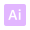
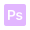
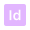

CHI SONO?
Sono Matteo Granata, 22 anni, vivo a Sesto San Giovanni. Sono una persona curiosa e creativa con una passione per la fotografia e il mondo digitale. Mi sto preparando a intraprendere nuove opportunità e sviluppare le mie competenze per accrescere la mia professionalità. Sono aperto a nuove sfide, occasioni e collaborazioni per migliorare le mie abilità.
Graphic Design
Ho ottenuto il mio diploma presso IIS Caterina da Siena a Milano. Durante il mio percorso di studio, ho acquisito una solida base di competenze in grafica pubblicitaria, imparando a padroneggiare strumenti e software essenziali, a comprendere i principi del design e a sviluppare la capacità di comunicare in modo efficace attraverso l'arte visiva.
Full Stack Developer
Al momento, sto perseguendo il mio percorso di formazione in Full Stack Development presso Start2Impact. Questo corso mi sta fornendo una solida base di conoscenze relative alla progettazione e allo sviluppo di applicazioni web, acquisendo competenze chiave in linguaggi di programmazione, sviluppo front-end e back-end, nonché strumenti tecnologici essenziali.
Skill
  
Hobby
I miei hobby sono la fotografia digitale amatoriale, videogiochi, musica e film/serieTV.
Riflettono la mia natura creativa e l'amore per l'arte multimediale.